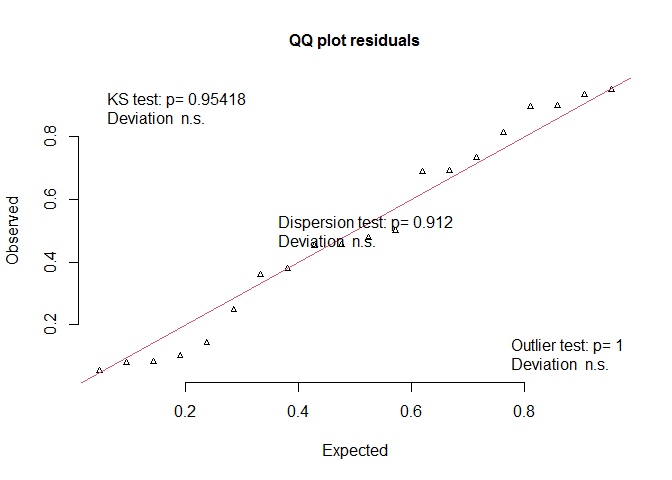

Mixed model formulation of a paired t-test
Learn some insights about mixed models based on a simple example
What you will learn
In this tutorial we explain the analogy between the paired t-test and the corresponding mixed model formulation.
Used packages
library(knitr)
library(lme4)
library(tidyr)
library(broom)
library(DHARMa)
Data
- plot: identifies paired measurements
- response: measurement values
- treatment: identifies two treatments (a and b)
set.seed(124)
paired_data <- data.frame(
plot = rep(1:10, 2),
response = c(rnorm(10), rnorm(10, 3, 1.5)),
treatment = rep(c("a", "b"), each = 10)
)
paired_data$treatment <- as.factor(paired_data$treatment)
paired_data$plot <- as.factor(paired_data$plot)
# in wide format
paired_data_wide <- pivot_wider(
paired_data,
id_cols = plot,
names_from = treatment,
values_from = response
)
kable(paired_data)
| plot | response | treatment |
|---|---|---|
| 1 | -1.3850706 | a |
| 2 | 0.0383232 | a |
| 3 | -0.7630302 | a |
| 4 | 0.2123061 | a |
| 5 | 1.4255380 | a |
| 6 | 0.7444798 | a |
| 7 | 0.7002294 | a |
| 8 | -0.2293546 | a |
| 9 | 0.1970939 | a |
| 10 | 1.2071538 | a |
| 1 | 3.4775051 | b |
| 2 | 0.8643017 | b |
| 3 | 2.3923637 | b |
| 4 | 4.4930798 | b |
| 5 | 4.4382267 | b |
| 6 | 4.3771318 | b |
| 7 | 2.7735456 | b |
| 8 | 1.1653968 | b |
| 9 | 1.6967636 | b |
| 10 | 1.4362720 | b |
kable(paired_data_wide)
| plot | a | b |
|---|---|---|
| 1 | -1.3850706 | 3.4775051 |
| 2 | 0.0383232 | 0.8643017 |
| 3 | -0.7630302 | 2.3923637 |
| 4 | 0.2123061 | 4.4930798 |
| 5 | 1.4255380 | 4.4382267 |
| 6 | 0.7444798 | 4.3771318 |
| 7 | 0.7002294 | 2.7735456 |
| 8 | -0.2293546 | 1.1653968 |
| 9 | 0.1970939 | 1.6967636 |
| 10 | 1.2071538 | 1.4362720 |
The paired t-test
ttest <- with(
paired_data_wide,
t.test(y = a, x = b, paired = TRUE)
)
kable(tidy(ttest))
| estimate | statistic | p.value | parameter | conf.low | conf.high | method | alternative |
|---|---|---|---|---|---|---|---|
| 2.496692 | 5.157401 | 0.0005972 | 9 | 1.401584 | 3.591799 | Paired t-test | two.sided |
Alternative, but equivalent formulation via a lineair mixed model
Plot identifies the paired measurements. A random effect for plot allows us to take this dependence into account.
mm <- lmer(response ~ treatment + (1 | plot),
data = paired_data
)
The parameter estimates for treatment b gives the difference compared to treatment a (= intercept), accounting for the paired nature of the data. This difference is the same as the estimate for the paired t-test.
kable(tidy(mm))
| term | estimate | std.error | statistic | group |
|---|---|---|---|---|
| (Intercept) | 0.2147669 | 0.3711260 | 0.578690 | fixed |
| treatmentb | 2.4966918 | 0.4840988 | 5.157401 | fixed |
| sd_(Intercept).plot | 0.4534165 | NA | NA | plot |
| sd_Observation.Residual | 1.0824778 | NA | NA | Residual |
The anova output gives us a test for treatment in terms of an F-test. The t-test is based on the t-statistic. Both test statistics are related: (F = t^2).
kable(anova(mm))
| npar | Sum Sq | Mean Sq | F value | |
|---|---|---|---|---|
| treatment | 1 | 31.16735 | 31.16735 | 26.59879 |
anova(mm)[["F value"]]
## [1] 26.59879
unname(ttest[["statistic"]])^2
## [1] 26.59879
We can calculate the confidence interval given as part of the t-test output, based on the t-distributie.
difference <- data.frame(
diff = summary(mm)$coefficients[2, 1],
se = summary(mm)$coefficients[2, 2]
)
difference$lwr <- difference$diff - qt(p = 1 - 0.05 / 2, df = 9) * difference$se
difference$upr <- difference$diff + qt(p = 1 - 0.05 / 2, df = 9) * difference$se
kable(difference)
| diff | se | lwr | upr |
|---|---|---|---|
| 2.496692 | 0.4840988 | 1.401584 | 3.591799 |
The recommended procedure to calculate a confidence interval for
parameters of mixed models is, however, to use the `confint function.
Either an approximation (Wald statistic) or a profile likelihood
confidence interval can be calculated. These intervals are slightly
different from the t-distribution based confidence interval.
Via profile likelihood:
kable(confint(mm, parm = "treatmentb", method = "profile"))
## Computing profile confidence intervals ...
| 2.5 % | 97.5 % | |
|---|---|---|
| treatmentb | 1.505743 | 3.487635 |
Wald-type confidence interval:
kable(confint(mm, parm = "treatmentb", method = "Wald"))
| 2.5 % | 97.5 % | |
|---|---|---|
| treatmentb | 1.547876 | 3.445508 |
Were model assuptions met? Yes.
DHARMa::plotQQunif(mm)

Take home message
The standard paired t-test is typically used to test for a significant differences between two paired treatments. We can formulate the test in terms of a mixed model. The benefit is that we get more informative model output, which allows us among other things to check if model assumptions were met. For the paired t-test, one assumption is that the paired differences between treatments follow a normal distribution. When these assumptions are not met, the flexibility of the mixed model framework allows to improve the model to better fit the requirements for the data at hand. For instance, one can choose from a number of parametric statistical distributions that are likely to fit the data (for counts, the Poisson or negative binomial distribution can be chosen, and for binary or proportional data, a binomial distribution is an obvious choice).